Warning: package 'knitr' was built under R version 4.0.5Warning: package 'Matrix' was built under R version 4.0.5Jake Bowers
Warning: package 'knitr' was built under R version 4.0.5Warning: package 'Matrix' was built under R version 4.0.5Cluster randomized1 experiments allocate treatments to groups, but measure outcomes at the level of the individuals that compose the groups. It is this divergence between the level at which the intervention is assigned and the level at which outcomes are defined that classifies an experiment as cluster randomized.
Consider a study that randomly assigns villages to receive different development programs, where the well-being of households in the village is the outcome of interest. This is a clustered design because, while the treatment is assigned to the village as a whole, we are interested in outcomes defined at the household level. Or consider a study that randomly assigns certain households to receive different get-out-the-vote messages, where we are interested in the voting behavior of individuals. Because the unit of assignment for the message is the household, but the outcome is defined as individual behavior, this study is cluster randomized.
Now consider a study in which villages are selected at random, and 10 people from each village are assigned to treatment or control, and we measure the well-being of those individuals. In this case, the study is not cluster randomized, because the level at which treatment is assigned and the level at which outcomes are defined is the same. Suppose that a study randomly assigned villages to different development programs and then measured social cohesion in the village. Though it contains the same randomization procedure as our first example, it is not clustered because we are interested here in village-level outcomes: the level of treatment assignment and of outcome measurement is the same.
Clustering matters for two main reasons. On the one hand, clustering reduces the amount of information in an experiment because it restricts the number of ways that the treatment and control groups can be composed, relative to randomization at the individual level. If this fact is not taken into account, we often underestimate the variance in our estimator, leading to over-confidence in our the results of the study. On the other hand, clustering raises the question of how to combine information from different parts of the same experiment into one quantity. Especially when clusters are not of equal sizes and the potential outcomes of units within them are very different, conventional estimators will systematically produce the wrong answer due to bias. However, several approaches at the design and analysis phases can overcome the challenges posed by cluster randomized designs.
We commonly think of the information contained in studies in terms of the sample size and the characteristics of the units within the sample. Yet two studies with exactly the same sample size and the same participants could in theory contain very different amounts of information depending on whether units are clustered. This will greatly affect the precision of the inferences we make based on the studies.
Imagine an impact evaluation with 10 people, where 5 are assigned to the treatment group and 5 to control. In one version of the experiment, the treatment is assigned to individuals - it is not cluster randomized. In another version of the experiment, the 5 individuals with black hair and the 5 individuals with some other color of hair are assigned to treatment as a group. This design has two clusters: ‘black hair’ and ‘other color’.
A simple application of the n choose k rule shows why this matters. In the first version, the randomization procedure allows for 252 different combinations of people as the treatment and control groups. However, in the second version, the randomization procedure assigns all the black-haired subjects either to treatment or to control, and thus only ever produces two ways of combining people to estimate an effect.
Throughout this guide, we will illustrate points using examples written in R code. You can copy and paste this into your own R program to see how it works.
set.seed(12345)
# Define the sample average treatment effect (SATE)
treatment_effect <- 1
# Define the individual ids (i)
person <- 1:10
# Define the cluster indicator (j)
hair_color <- c(rep("black",5),rep("brown",5))
# Define the control outcome (Y0)
outcome_if_untreated <- rnorm(n = 10)
# Define the treatment outcome (Y1)
outcome_if_treated <- outcome_if_untreated + treatment_effect
# Version 1 - Not cluster randomized
# Generate all possible non-clustered assignments of treatment (Z)
non_clustered_assignments <- combn(x = unique(person),m = 5)
# Estimate the treatment effect
treatment_effects_V1 <-
apply(
X = non_clustered_assignments,
MARGIN = 2,
FUN = function(assignment) {
treated_outcomes <- outcome_if_treated[person %in% assignment]
untreated_outcomes <- outcome_if_untreated[!person %in% assignment]
mean(treated_outcomes) - mean(untreated_outcomes)
}
)
# Estimate the true standard error
standard_error_V1 <- sd(treatment_effects_V1)
# Plot the histogram of all possible estimates of the treatment effect
hist(treatment_effects_V1,xlim = c(-1,2.5),breaks = 20)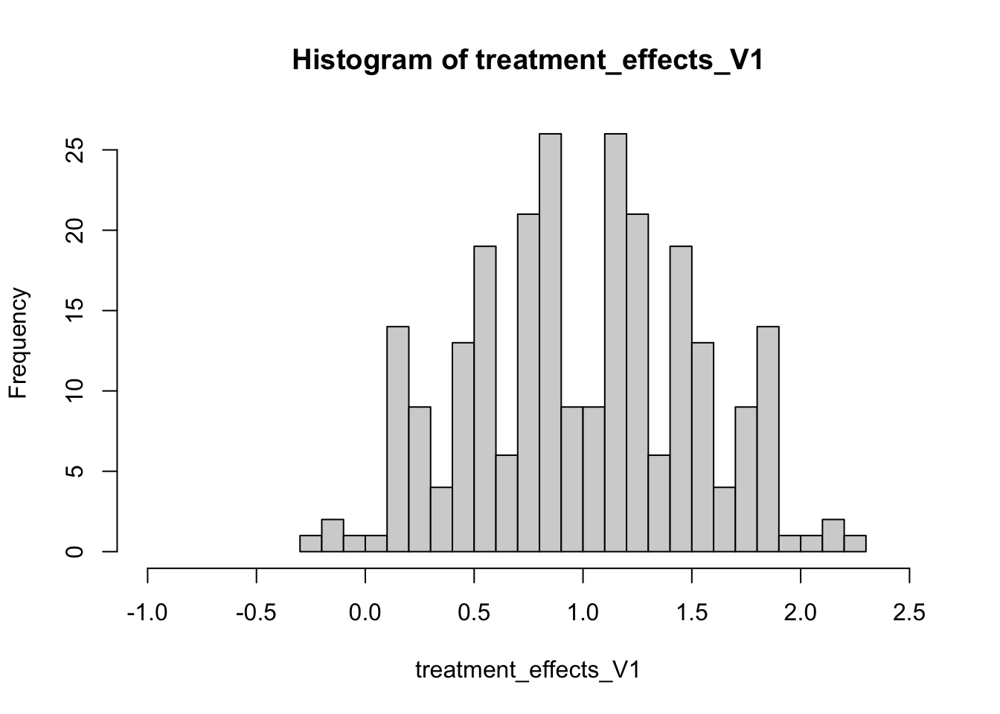
# Version 2 - Cluster randomized
# Generate all possible assignments of treatment when clustering by hair color (Z)
clustered_assignments <- combn(x = unique(hair_color),m = 1)
# Estimate the treatment effect
treatment_effects_V2 <-
sapply(
X = clustered_assignments,
FUN = function(assignment) {
treated_outcomes <- outcome_if_treated[person %in% person[hair_color==assignment]]
untreated_outcomes <- outcome_if_untreated[person %in% person[!hair_color==assignment]]
mean(treated_outcomes) - mean(untreated_outcomes)
}
)
# Estimate the true standard error
standard_error_V2 <- sd(treatment_effects_V2)
# Plot the histogram of all possible estimates of the treatment effect
hist(treatment_effects_V2,xlim = c(-1,2.5),breaks = 20)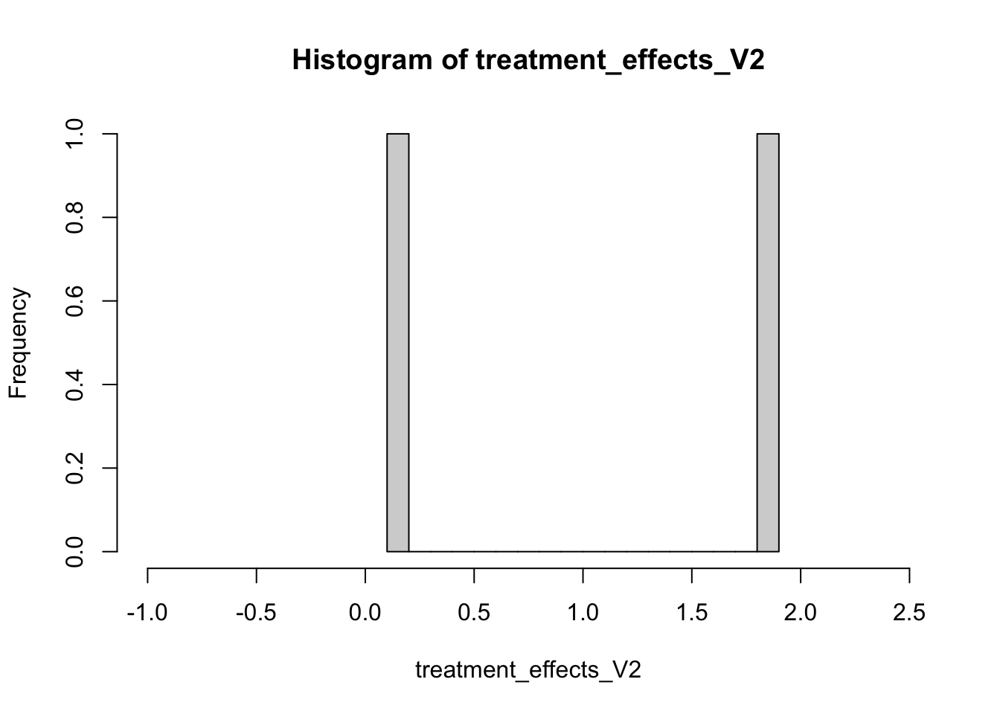
As the histograms show, clustering provides a much ‘coarser’ view of the treatment effect. Irrespective of the number of times one randomizes the treatment and of the number of subjects one has, in a clustered randomization procedure the number of possible estimates of the treatment effect will be strictly determined by the number of clusters assigned to the different treatment conditions. This has important implications for the standard error of the estimator.
| standard_error_V1 | standard_error_V2 |
|---|---|
| 0.52 | 1.13 |
While the sampling distribution for the non-clustered estimate of the treatment effect has a standard error of about .52, that of the clustered estimate is more than twice as large, at 1.13. Recall that the data going into both studies is identical, the only difference between the studies resides in the way that the treatment assignment mechanism reveals the information.
Related to this issue of information is the question of how much units in our study vary within and between clusters. Two cluster randomized studies with \(J=10\) villages and \(n_j=100\) people per village may have different information about the treatment effect on individuals if, in one study, differences between villages are much greater than the differences in outcomes within them. If, say, all of the individuals in any village acted exactly the same but different villages showed different outcomes, then we would have on the order of 10 pieces of information: all of the information about causal effects in that study would be at the village level. Alternatively, if the individuals within a village acted more or less independently of each other, then we would have on the order of 10 \(\times\) 100=1000 pieces of information.
We can formalize the idea that the highly dependent clusters provide less information than the highly independent clusters with the intracluster correlation coefficient. For a given variable, \(y\), units \(i\) and clusters \(j\), we can write the intracluster correlation coefficient as follows:
\[ \text{ICC} \equiv \frac{\text{variance between clusters in } y}{\text{total variance in } y} \equiv \frac{\sigma_j^2}{\sigma_j^2 + \sigma_i^2} \]
where \(\sigma_i^2\) is the variance between units in the population and \(\sigma_j^2\) is the variance between outcomes defined at the cluster level. Kish (1965) uses this description of dependence to define his idea of the “effective N” of a study (in the sample survey context, where samples may be clustered):
\[\text{effective N}=\frac{N}{1+(n_j -1)\text{ICC}}=\frac{Jn}{1+(n-1)\text{ICC}},\]
where the second term follows if all of the clusters are the same size (\(n_1 \ldots n_J \equiv n\)).
If 200 observations arose from 10 clusters with 20 individuals within each cluster, where ICC = .5, such that 50% of the variation could be attributed to cluster-to-cluster differences (and not to differences within a cluster), Kish’s formula would suggest that we have an effective sample size of about 19 observations, instead of 200.
As the foregoing discussion suggests, clustering reduces information most when it a) greatly restricts the number of ways in which subjects can be assigned to treatment and control groups, and b) produces units whose outcomes are strongly related to the cluster they are a member of (i.e. when it increases the ICC).
One way to limit the extent to which clustering reduces the information contained in our design would be to form clusters in such a way that the intracluster correlation is low. For example, if we were able to form clusters randomly, there would be no systematic relationship between units within a cluster. Hence, using cluster random assignment to assign these randomly formed clusters to experimental conditions would not result in any information reduction. Yet, opportunities to create clusters are typically rare. In most cases, we have to rely on naturally formed clusters (e.g., villages, classrooms, cities). In most scenarios that involve clustered assignment, we hence will have to make sure that our estimates of uncertainty about treatment effects correctly reflect the resulting information loss from clustering.
In order to characterize our uncertainty about treatment effects, we typically want to calculate a standard error: an estimate of how much our treatment effect estimates would vary, were we able to repeat the experiment a very large number of times and, for each repetition, observe units in their resulting treated or untreated state.
However, we are never able to observe the true standard error of an estimator, and therefore must use statistical procedures to infer this unknown quantity. Conventional methods for calculating standard errors do not take into account clustering. Thus, in order to avoid over-confidence in experimental findings, we need to modify the way in which we calculate uncertainty estimates.
In this section we limit our attention to so-called ‘design-based’ approaches to calculating the standard error. In the design-based approach we simulate repetitions of the experiment to derive and check ways of characterizing the variance of the estimate of the treatment effect, accounting for clustered randomization. We contrast these with ‘model-based’ approaches further on in the guide. In the model-based approach we state that the outcomes were generated according to a probability model and that the cluster-level relationships also follow a probability model.
To begin, we will create a function which simulates a cluster randomized experiment with fixed intracluster correlation, and use it to simulate some data from a simple cluster-randomized design.
make_clustered_data <- function(J = 10, n = 100, treatment_effect = .25, ICC = .1){
## Inspired by Mathieu et al, 2012, Journal of Applied Psychology
if (J %% 2 != 0 | n %% 2 !=0) {
stop(paste("Number of clusters (J) and size of clusters (n) must be even."))
}
Y0_j <- rnorm(J,0,sd = (1 + treatment_effect) ^ 2 * sqrt(ICC))
fake_data <- expand.grid(i = 1:n,j = 1:J)
fake_data$Y0 <- rnorm(n * J,0,sd = (1 + treatment_effect) ^ 2 * sqrt(1 - ICC)) + Y0_j[fake_data$j]
fake_data$Y1 <- with(fake_data,mean(Y0) + treatment_effect + (Y0 - mean(Y0)) * (2 / 3))
fake_data$Z <- ifelse(fake_data$j %in% sample(1:J,J / 2) == TRUE, 1, 0)
fake_data$Y <- with(fake_data, Z * Y1 + (1 - Z) * Y0)
return(fake_data)
}
set.seed(12345)
pretend_data <- make_clustered_data(J = 10,n = 100,treatment_effect = .25,ICC = .1)Because we have created the data ourselves, we can calculate the true standard error of our estimator. We firstly generate the true sampling distribution by simulating every possible permutation of the treatment and calculating the estimate each time. The standard deviation of this distribution is the standard error of the estimator.
# Define the number of clusters
J <- length(unique(pretend_data$j))
# Generate all possible ways of combining clusters into a treatment group
all_treatment_groups <- with(pretend_data,combn(x = 1:J,m = J/2))
# Create a function for estimating the effect
clustered_ATE <- function(j,Y1,Y0,treated_clusters) {
Z_sim <- (j %in% treated_clusters)*1
Y <- Z_sim * Y1 + (1 - Z_sim) * Y0
estimate <- mean(Y[Z_sim == 1]) - mean(Y[Z_sim == 0])
return(estimate)
}
set.seed(12345)
# Apply the function through all possible treatment assignments
cluster_results <- apply(
X = all_treatment_groups, MARGIN = 2,
FUN = clustered_ATE,
j = pretend_data$j,Y1 = pretend_data$Y1,
Y0 = pretend_data$Y0
)
true_SE <- sd(cluster_results)
true_SE[1] 0.2567029This gives a standard error of 0.26. We can compare the true standard error to two other kinds of standard error commonly employed. The first ignores clustering and assumes that treatment effect estimates are identically and independently distributed according to a normal distribution. We will refer to this as the I.I.D. standard error. To take clustering into account, we can use the following formula for the standard error:
\[\text{Var}_\text{clustered}(\hat{\tau})=\frac{\sigma^2}{\sum_{j=1}^J \sum_{i=1}^{n_j} (Z_{ij}-\bar{Z})^2} (1-(n-1)\rho)\]
where \(\sigma^2=\sum_{j=1}^J \sum_{i=1}^{n_j} (Y_{ij} - \bar{Y}_{ij})^2\) (following Arceneaux and Nickerson (2009) ). This adjustment to the IID standard error is commonly known as the “Robust Clustered Standard Error” or RCSE.
ATE_estimate <- lm(Y ~ Z,data = pretend_data)
IID_SE <- function(model) {
return(sqrt(diag(vcov(model)))[["Z"]])
}
RCSE <- function(model, cluster,return_cov = FALSE){
require(sandwich)
require(lmtest)
M <- length(unique(cluster))
N <- length(cluster)
K <- model$rank
dfc <- (M/(M - 1)) * ((N - 1)/(N - K))
uj <- apply(estfun(model), 2, function(x) tapply(x, cluster, sum))
rcse.cov <- dfc * sandwich(model, meat = crossprod(uj)/N)
rcse.se <- as.matrix(coeftest(model, rcse.cov))
if(return_cov){
return(rcse.cov)
}else{
return(rcse.se)
}
}
IID_SE_estimate <- IID_SE(model = ATE_estimate)
RCSE_estimate <- RCSE(model = ATE_estimate,cluster = pretend_data$j)
knitr::kable(round(
data.frame(
true_SE = true_SE,
IID_SE_estimate = IID_SE_estimate,
RCSE_estimate = RCSE_estimate["Z", "Std. Error"]
),
2
))| true_SE | IID_SE_estimate | RCSE_estimate |
|---|---|---|
| 0.26 | 0.08 | 0.26 |
When we ignore the clustered-assignment, the standard error is too small: we are over-confident about the amount of information provided to us by the experiment. The RCSE is slightly more conservative than the true standard error in this instance, but is very close. The discrepancy is likely because the RCSE is not a good approximation of the true standard error when the number of clusters is as small as it is here. To illustrate the point further, we can compare a simulation of the true standard error generated through random permutations of the treatment to the IID and RC standard errors.
compare_SEs <- function(data) {
simulated_SE <- sd(replicate(
5000,
clustered_ATE(
j = data$j,
Y1 = data$Y1,
Y0 = data$Y0,
treated_clusters = sample(unique(data$j),length(unique(data$j))/2)
)
))
ATE_estimate <- lm(Y ~ Z,data)
IID_SE_estimate <- IID_SE(model = ATE_estimate)
RCSE_estimate <- RCSE(model = ATE_estimate,cluster = data$j)["Z", "Std. Error"]
return(round(c(
simulated_SE = simulated_SE,
IID_SE = IID_SE_estimate,
RCSE = RCSE_estimate
),3))
}
J_4_clusters <- make_clustered_data(J = 4)
J_10_clusters <- make_clustered_data(J = 10)
J_30_clusters <- make_clustered_data(J = 30)
J_100_clusters <- make_clustered_data(J = 100)
J_1000_clusters <- make_clustered_data(J = 1000)
set.seed(12345)
knitr::kable(rbind(
c(J = 4,compare_SEs(J_4_clusters)),
c(J = 30,compare_SEs(J_30_clusters)),
c(J = 100,compare_SEs(J_100_clusters)),
c(J = 1000,compare_SEs(J_1000_clusters))
))| J | simulated_SE | IID_SE | RCSE |
|---|---|---|---|
| 4 | 0.270 | 0.127 | 0.260 |
| 30 | 0.161 | 0.047 | 0.146 |
| 100 | 0.085 | 0.027 | 0.088 |
| 1000 | 0.027 | 0.008 | 0.027 |
As these simple examples illustrate, the clustered estimate of the standard error (RCSE) gets closer to the truth (the simulated standard error) as the number of clusters increases. Meanwhile, the standard error ignoring clustering (assuming IID) tends to be smaller than either of the other standard errors. The smaller the estimate of the standard error is, the more precise the estimates seem to us, and the more likely we will find results that appear ‘statistically significant’. This is problematic: in this case, the IID standard error is leads us to be over confident in our results because it ignores intra-cluster correlation, the extent to which differences between units can be attributed to the cluster they are a member of. If we estimate standard errors using techniques that understate our uncertainty, we are more likely to falsely reject null hypotheses when we should not.
Another way to approach the problems that clustering introduces into the calculation of standard errors is to analyze the data at the level of the cluster. In this approach, we take averages or sums of the outcomes within the clusters, and then treat the study as though it only took place at the level of the cluster. Hansen and Bowers (2008) show that we can characterize the distribution of the difference of means using what we know about the distribution of the sum of the outcome in the treatment group, which varies from one assignment of treatment to another.
# Aggregate the unit-level data to the cluster level
# Sum outcome to cluster level
Yj <- tapply(pretend_data$Y,pretend_data$j,sum)
# Aggregate assignment indicator to cluster level
Zj <- tapply(pretend_data$Z,pretend_data$j,unique)
# Calculate unique cluster size
n_j <- unique(as.vector(table(pretend_data$j)))
# Calculate total sample size (our units are now clusters)
N <- length(Zj)
# Generate cluster id
j <- 1:N
# Calculate number of clusters treated
J_treated <- sum(Zj)
# Make a function for the cluster-level difference in means estimator (See Hansen & Bowers 2008)
cluster_difference <- function(Yj,Zj,n_j,J_treated,N){
ones <- rep(1, length(Zj))
ATE_estimate <- crossprod(Zj,Yj)*(N/(n_j*J_treated*(N-J_treated))) -
crossprod(ones,Yj)/(n_j*(N-J_treated))
return(ATE_estimate)
}
# Given equal sized clusters and no blocking, this is identical to the
# unit-level difference in means
ATEs <- colMeans(data.frame(
cluster_level_ATE =
cluster_difference(Yj,Zj,n_j,J_treated,N),
unit_level_ATE =
with(pretend_data, mean(Y[Z == 1]) - mean(Y[Z == 0]))
))
knitr::kable(data.frame(ATEs),align = "c")| ATEs | |
|---|---|
| cluster_level_ATE | 0.3417229 |
| unit_level_ATE | 0.3417229 |
In order to characterize uncertainty about the cluster-level ATE, we can exploit the fact that the only random element of the estimator is now the cross-product between the cluster-level assignment vector and the cluster-level outcome, \(\mathbf{Z}^\top\mathbf{Y}\), scaled by some constant. We can estimate the variance of this random component through permutation of the assignment vector or through an approximation of the variance, assuming that the sampling distribution follows a normal distribution.
# Approximating variance using normality assumptions
normal_sampling_variance <-
(N/(n_j*J_treated*(N-J_treated)))*(var(Yj)/n_j)
# Approximating variance using permutations
set.seed(12345)
sampling_distribution <- replicate(10000,cluster_difference(Yj,sample(Zj),n_j,J_treated,N))
ses <- data.frame(
sampling_variance = c(sqrt(normal_sampling_variance), sd(sampling_distribution)),
p_values = c(
2 * (1 - pnorm(abs(ATEs[1]) / sqrt(normal_sampling_variance), mean = 0)),
2*min(mean(sampling_distribution>=ATEs[1]),mean(sampling_distribution<=ATEs[1]))
)
)
rownames(ses) <- c("Assuming Normality","Permutations")
knitr::kable(ses)| sampling_variance | p_values | |
|---|---|---|
| Assuming Normality | 0.2848150 | 0.2302145 |
| Permutations | 0.2825801 | 0.2792000 |
This cluster-level approach has the advantage of correctly characterizing uncertainty about effects when randomization is clustered, without having to use the RCSE standard errors for the unit-level estimates, which are overly permissive for small N. Indeed, the false positive rate of tests based on RCSE standard errors tend to be incorrect when the number of clusters is small, leading to over-confidence. As we shall see below, however, when the number of clusters is very small (\(J=4\)) the cluster-level approach is overly conservative, rejecting the null with a probability of 1. Another drawback of the cluster-level approach is that it does not allow for the estimation of unit-level quantities of interest, such as heterogeneous treatment effects.
When clusters are of different sizes, this can pose a unique class of problems related to the estimation of the treatment effect. Especially when the size of the cluster is in some way related to the potential outcomes of the units within it many conventional estimators of the sample average treatment effect (SATE) can be biased.
To fix ideas, imagine an intervention targeted at firms of different sizes, which seeks to increase worker productivity. Due to economies of scale, the productivity of employees in big firms is increased much more proportional to that of employees in smaller firms. Imagine that the experiment includes 20 firms ranging in size from one-person entrepreneurs to large outfits with over 500 employees. Half of the firms are assigned to the treatment, and the other half are assigned to control. Outcomes are defined at the employee level.
set.seed(1000)
# Number of firms
J <- 20
# Employees per firm
n_j <- rep(2^(0:(J/2-1)),rep(2,J/2))
# Total number of employees
N <- sum(n_j)
# 2046
# Unique employee (unit) ID
i <- 1:N
# Unique firm (cluster) ID
j <- rep(1:length(n_j),n_j)
# Firm specific treatment effects
cluster_ATE <- n_j^2/10000
# Untreated productivity
Y0 <- rnorm(N)
# Treated productivity
Y1 <- Y0 + cluster_ATE[j]
# True sample average treatment effect
(true_SATE <- mean(Y1-Y0))[1] 14.9943As we see, there is high correlation in the treatment effect and cluster size. Now let us simulate 1000 analyses of this experiment, permuting the treatment assignment vector each time, and taking the unweighted difference in means as an estimate of the sample average treatment effect.
set.seed(1234)
# Unweighted SATE
SATE_estimate_no_weights <- NA
for(i in 1:1000){
# Clustered random assignment of half of the firms
Z <- (j %in% sample(1:J,J/2))*1
# Reveal outcomes
Y <- Z*Y1 + (1-Z)*Y0
# Estimate SATE
SATE_estimate_no_weights[i] <- mean(Y[Z==1])-mean(Y[Z==0])
}
# Generate histogram of estimated effects
hist(SATE_estimate_no_weights,xlim = c(true_SATE-2,true_SATE+2),breaks = 100)
# Add the expected estimate of the SATE using this estimator
abline(v=mean(SATE_estimate_no_weights),col="blue")
# And add the true SATE
abline(v=true_SATE,col="red")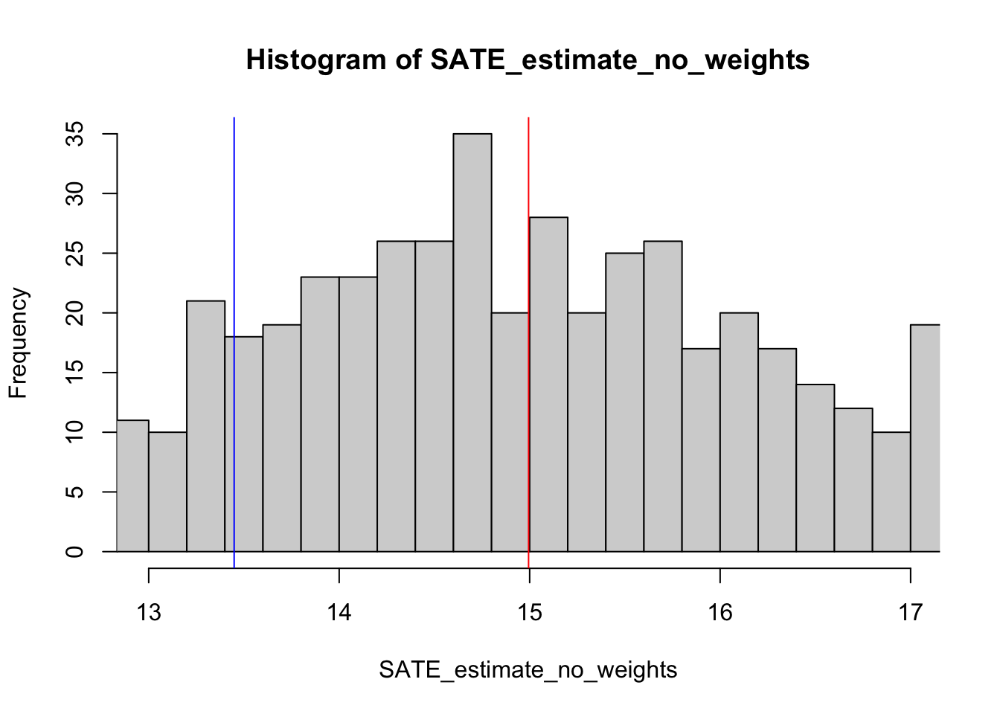
The histogram shows the sampling distribution of the estimator, with the true SATE in red and the unweighted estimate thereof in blue. The estimator is biased: in expectation, we do not recover the true SATE, instead underestimating it. Intuitively, one might correctly expect that the problem is related to the relative weight of the clusters in the calculation of the treatment effect. However, in this situation, taking the difference in the weighted average of the outcome among treated and control clusters is not enough to provide an unbiased estimator (see the code below).
set.seed(1234)
# Weighted cluster-averages
SATE_estimate_weighted <- NA
for(i in 1:1000){
# Define the clusters put into treatment
treated_clusters <- sample(1:J,J/2,replace = F)
# Generate unit-level assignment vector
Z <- (j %in% treated_clusters)*1
# Reveal outcomes
Y <- Z*Y1 + (1-Z)*Y0
# Calculate the cluster weights
treated_weights <- n_j[1:J%in%treated_clusters]/sum(n_j[1:J%in%treated_clusters])
control_weights <- n_j[!1:J%in%treated_clusters]/sum(n_j[!1:J%in%treated_clusters])
# Calculate the means of each cluster
treated_means <- tapply(Y,j,mean)[1:J%in%treated_clusters]
control_means <- tapply(Y,j,mean)[!1:J%in%treated_clusters]
# Calculate the cluster-weighted estimate of the SATE
SATE_estimate_weighted[i] <-
weighted.mean(treated_means,treated_weights) -
weighted.mean(control_means,control_weights)
}
# Generate histogram of estimated effects
hist(SATE_estimate_weighted,xlim = c(true_SATE-2,true_SATE+2),breaks = 100)
# Add the expected estimate of the unweighted SATE
abline(v=mean(SATE_estimate_no_weights),col="blue")
# Add the expected estimate of the weighted SATE
abline(v=mean(SATE_estimate_weighted),col="green")
# And add the true SATE
abline(v=true_SATE,col="red")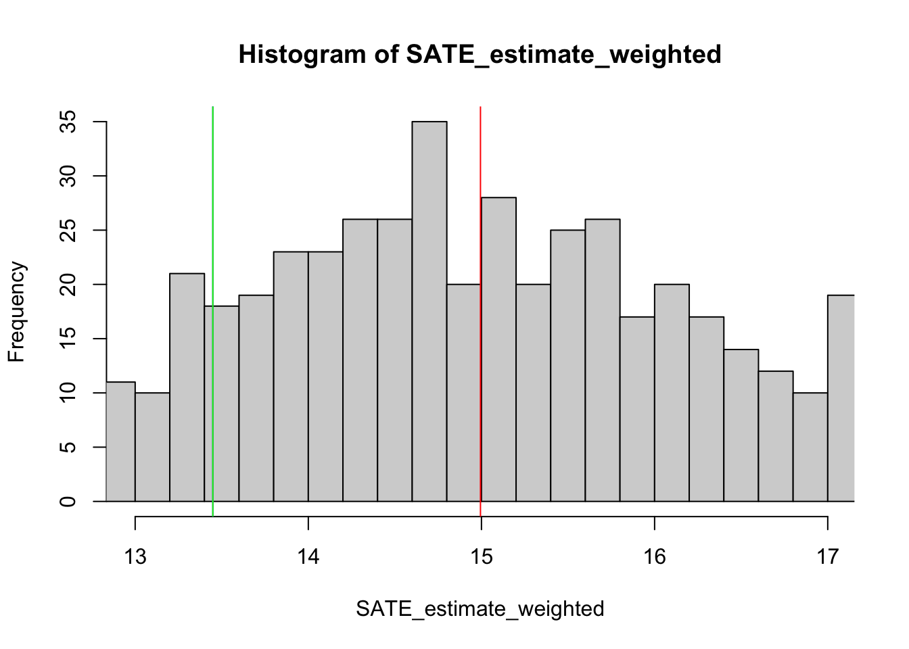
The histogram shows the sampling distribution of the weighted estimator, with the true SATE in red and the unweighted estimate in blue, and the weighted estimate in green. In expectation, the weighted version of the estimator in fact gives the same estimate of the SATE as the non-weighted version. What is the nature of the bias?
Instead of assigning treatment to half of the clusters and comparing outcomes at the level of the ‘treatment’ and ‘control’ groups, imagine that we paired each cluster with one other cluster, and assigned one to treatment within each pair. Our estimate of the treatment effect is then the aggregate of the pair-level estimates. This is analogous to the complete random assignment procedure employed above, in which \(J/2\) firms were assigned to treatment. Now, we will instead refer to the \(k\)’th of the \(m\) pairs, where \(2m = J\).
Given this setup, Imai, King, and Nall (2009) give the following formal definition of the bias in the cluster-weighted difference-in-means estimator
\[\frac{1}{n} \sum^m_{k = 1} \sum^2_{l = 1} \left[ \left( \frac{n_{1k} + n_{2k}}{{2} - n_{lk}} \right) \times \sum^{n_{lk}}_{i = 1} \frac{Y_{ilk}(1) - Y_{ilk}(0)}{n_{lk}} \right],\]
where \(l = 1,2\) indexes the clusters within each pair. Thus, \(n_{1k}\) refers to the number of units in the first of the \(k\)’th pair of clusters.
This expression indicates that bias from unequal cluster sizes arises if and only if two conditions are met. Firstly, the sizes of at least one pair of clusters must be unequal: when \(n_{1k}=n_{2k}\) for all \(k\), the bias term is reduced to 0. Secondly, the weighted effect sizes of at least one pair of clusters must be unequal: when \(\sum_{i = 1}^{n_{1k}}(Y_{i1k}(1)-Y_{i1k}(0))/n_{1k} = \sum_{i = 1}^{n_{2k}}(Y_{i2k}(1)-Y_{i2k}(0))/n_{2k}\) for all \(k\), the bias is also reduced to 0.
Two other approaches work to alleviate this problem of bias from the correlation of cluster size and treatment effect: (1) condition on cluster size directly and (2) use the Horvitz-Thompson estimator. This DeclareDesign Blog Post discusses both options. Here we demonstrate a pairing approach to conditioning on cluster-size given the example data that we generated above.
As the above expression suggests, in order to reduce the bias from unequal cluster sizes to almost 0, it is sufficient to put clusters into pairs that either are of equal size or have almost identical potential outcomes.
We demonstrate this approach below using the same data as we examined in the example of a hypothetical firm-randomized employee productivity experiment.
set.seed(1234)
# Make a function that matches pairs based on size
pair_sizes <- function(j,n_j){
# Find all of the unique sizes
unique_sizes <- unique(n_j)
# Find the number of unique sizes
N_unique_sizes <- length(unique_sizes)
# Generate a list of candidates for pairing at each cluster size
possible_pairs <- lapply(unique_sizes, function(size) {
which(n_j == size)
})
# Find the number of all possible pairs (m)
m_pairs <- length(unlist(possible_pairs))/2
# Generate a vector with unique pair-level identifiers
pair_indicator <- rep(1:m_pairs,rep(2,m_pairs))
# Randomly assign units of the same cluster size into pairs
pair_assignment <-
unlist(lapply(
possible_pairs,
function(pair_list){
sample(pair_indicator[unlist(possible_pairs) %in% pair_list])
}
))
# Generate a vector indicating the k'th pair for each i unit
pair_assignment <- pair_assignment[match(x = j,table = unlist(possible_pairs))]
return(pair_assignment)
}
pair_indicator <- pair_sizes(j = j , n_j = n_j)
SATE_estimate_paired <- NA
for(i in 1:1000){
# Now loop through the vector of paired assignments
pair_ATEs <- sapply(unique(pair_indicator),function(pair){
# For each pair, randomly assign one to treatment
Z <- j[pair_indicator==pair] %in% sample(j[pair_indicator==pair],1)*1
# Reveal the potential outcomes of the pair
Y <- Z*Y1[pair_indicator==pair] + (1-Z)*Y0[pair_indicator==pair]
clust_weight <- length(j[pair_indicator==pair])/N
clust_ATE <- mean(Y[Z==1])-mean(Y[Z==0])
return(c(weight = clust_weight, ATE = clust_ATE))
})
SATE_estimate_paired[i] <- weighted.mean(x = pair_ATEs["ATE",],w = pair_ATEs["weight",])
}
# Generate histogram of estimated effects
hist(SATE_estimate_paired,xlim = c(true_SATE-2,true_SATE+2),breaks = 100)
# Add the expected estimate of the paired SATE
abline(v=mean(SATE_estimate_paired),col="purple")
# And add the true SATE
abline(v=true_SATE,col="red")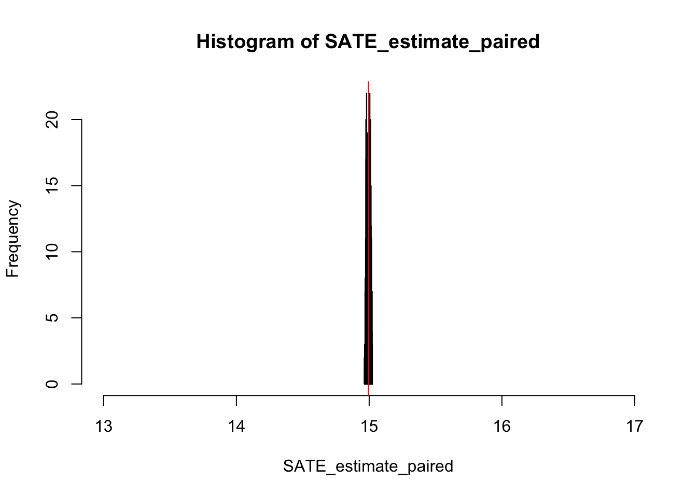
# The paired estimator is much closer to the true SATE
kable(round(data.frame(
true_SATE = true_SATE,
paired_SATE = mean(SATE_estimate_paired),
weighted_SATE = mean(SATE_estimate_weighted),
unweighted_SATE = mean(SATE_estimate_no_weights)
),2))| true_SATE | paired_SATE | weighted_SATE | unweighted_SATE |
|---|---|---|---|
| 14.99 | 14.99 | 13.45 | 13.45 |
In spite of unequal cluster sizes, the bias is completely eliminated by this technique: in expectation, the paired estimator recovers the true Sample Average Treatment Effect, whereas the cluster-weighted and non-weighted difference-in-means estimators are biased.
Note also that the variance in the sampling distribution is much lower for the pair-matched estimator, giving rise to much more precise estimates. Thus, pair-matching not only promises to reduce bias, but can also greatly mitigate the problem of information reduction that clustering induces.
Such pre-randomization pair matching, however, does impose some constraints on the study, some of which may be difficult to meet in practice. For example, it may be difficult or even impossible to find perfectly-matched pairs for every cluster size, especially when there are multiple treatments (such that, instead of pairs, treatment is randomized over triplets or quadruplets). In such cases, researchers may adopt several other solutions, such as creating pairs by matching on observed covariates prior to the randomization, whereby, for example, the within-pair similarity of observed covariates is maximized. Imai, King, and Nall (2009) recommend a mixture model for post-randomization pair-matched estimation, and spell out some of the assumptions that must be made for such estimates to be valid. And this DeclareDesign Blog Post demonstrates conditioning on cluster-size without strict pairing.
In many, or most experiments, we would like to estimate the average causal effect of the treatment within a population or a sample. Denoting \(Y_{z_i}\) the outcome \(Y\) of unit \(i\) when assigned to the treatment status \(z_i \in \{1,0\}\), we can define this quantity – the ATE (Average Treatment Effect) – as the expected value of the difference between the sample when assigned to treatment, \(Y_1\) and the sample when assigned to control \(Y_0\): \(E[Y_1 - Y_0]\).
However, it may be the case that a unit’s outcome depends on the treatment status \(z_j\) of another unit, \(j\), inside the same cluster. In that case, we denote potential outcomes \(Y_{z_j,z_i} \in \{ Y_{00}, Y_{10}, Y_{01}, Y_{11} \}\), where an untreated unit with an untreated cluster neighbor is defined as \(Y_{00}\), an untreated unit with a treated cluster neighbor as \(Y_{10}\), a treated unit with an untreated cluster neighbor as \(Y_{01}\), and a treated unit with a treated cluster neighbor as \(Y_{11}\). When we conduct a cluster-randomized experiment, we typically assume that a unit’s outcome is not a function of the treatment status of the units with whom it shares a cluster, or formally \(Y_{01}=Y_{11}=Y_1\) and \(Y_{10}=Y_{00}=Y_0\). Yet, for all sorts of reasons this may not be the case: depending on whom someone finds themselves in the same cluster with, and whether or not that cluster is assigned to treatment, their outcomes may be very different.
Consider an experiment in which five pairs of students living in dorms are randomly assigned to either receive or not receive a food subsidy, and their stated well-being is the outcome of interest. Let us assume that four students are vegetarian (V) and six are meat-eaters (M). When a VV, MM, or VM pair is assigned to control, they do not receive the subsidy and their well-being is unaffected. However, when assigned to treatment, VM pairs quarrel and this reduces their well-being, whereas VV and MM pairs do not fight and are affected only by the treatment. Let us denote \(x_k \in \{0,1\}\) an indicator for whether the pair is mismatched, where the unit’s outcome is denoted \(Y_{z_j,z_j,x_k}\). This implies that \(Y_{110} = Y_1\) and \(Y_{000} = Y_{001} = Y_0\), whereas \(Y_{111} \neq Y_1\). To understand how this matters, let us simulate such an experiment.
# Create experimental data
N <- 10
types <- c(rep("V",.4*N),rep("M",.6*N))
ID <- 1:length(types)
baseline <- rnorm(length(ID))
# The true treatment effect is 5
true_ATE <- 5
# If a pair is mismatched (VM, MV), they get a spillover of -10
spillover_or_not <- function(type_i,type_j){
ifelse(type_i==type_j,yes = 0,no = -10)
}
# A function for forming pairs
form_pairs <- function(ID,types){
N <- length(ID)
k <- rep(1:(N/2),2)
pair_place <- rep(c(1,2),c(N/2,N/2))
ID_draw <- sample(ID)
type_i <- types[ID_draw]
pair_1 <- type_i[pair_place==1]
pair_2 <- type_i[pair_place==2]
ID_j_1 <- ID_draw[pair_place==1]
ID_j_2 <- ID_draw[pair_place==2]
type_j <- c(pair_2,pair_1)
j <- c(ID_j_2,ID_j_1)
return(data.frame(i = ID_draw,j = j,k = k, type_i = type_i, type_j = type_j))
}
# A function for assigning treatment and revealing the outcome
assign_reveal_est <- function(k,i,effect,spillover){
Z <- (k %in% sample(k,N/2))*1
Y <- baseline[i] + Z*effect + Z*spillover
mean(Y[Z==1])-mean(Y[Z==0])
}
# A function for simulating the experiment
simulate_exp <- function(){
data <- form_pairs(ID,types)
spillover <- spillover_or_not(data$type_i,data$type_j)
estimate <- assign_reveal_est(k = data$k,effect = true_ATE,spillover = spillover,i = data$i)
return(estimate)
}
# Estimate the effects one thousand times
est_effects <- replicate(n = 1000,expr = simulate_exp())
# Plot the estimates as bars, the expected ATE in blue, and the true ATE in red
hist(est_effects,breaks = 100,xlim = c(-7,7))
abline(v = true_ATE,col = "red")
abline(v = mean(est_effects,na.rm = T),col = "blue")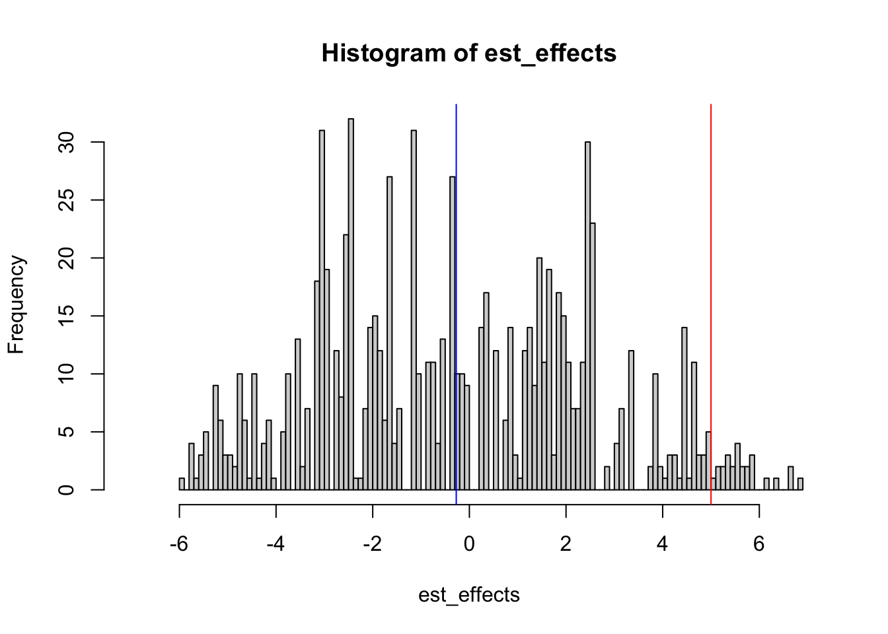
As the plot above shows, this is a biased estimator of the true individual level treatment effect, \(Y_{01} - Y_{00}\). In expectation, we estimate an effect close to 0, obtaining very negative effects in almost half of the simulations of this experiment. The key point here is that the estimand is changed: rather than the ATE, we obtain a combination of the true treatment effect among those who are matched (do not experience spillovers) \(E[Y_{110}-Y_{00x_k}]\), and the combined treatment and spillover effect for those who are unmatched \(E[Y_{111}-Y_{00x_k}]\). Crucially, however, we cannot identify the impact of the spillover, \(E[Y_{101}-Y_{00x_k}]\), independently of the direct effect. This is because the randomization is clustered: it is not possible to observe \(Y_{101}\) in a cluster-randomized scheme, because all units within a cluster are always treated. Generally speaking, this issue is true of any cluster-randomized study: in order to make the claim that we identify the individual-level effect of the treatment, we must assume that \(Y_{11}=Y_{1}\) and \(Y_{00}=Y_{0}\).
If there are strong reasons to believe that intra-cluster spillovers occur, then researchers can take different approaches depending on the manner in which clusters are formed. In some studies researchers must themselves sort units into groups for the purposes of experimentation: for example, in a study involving a vocational programme, the researcher may be able to decide who is recruited into which class. In such cases, if the researcher can make plausible assumptions about spillovers, then the individual-level treatment effect may be recoverable.
Consider a researcher conducting the previous study above who correctly assumed that spillovers would occur between mismatched pairs. In this case, the researcher can recover the true individual treatment effect by forming clusters that are not susceptible to spillover.
form_matched_pairs <- function(ID,types){
pair_list <- lapply(unique(types),function(type){
ID <- ID[types == type]
types <- types[types == type]
draw_ID <- 1:length(types)
matched_pairs <- form_pairs(ID = draw_ID,types = types)
matched_pairs$i <- ID[matched_pairs$i]
matched_pairs$j <- ID[matched_pairs$j]
matched_pairs$k <- paste0(type,"_",matched_pairs$k)
return(matched_pairs)
})
data <- rbind(pair_list[[1]],pair_list[[2]])
return(data)
}
simulate_matched_exp <- function(){
data <- form_matched_pairs(ID,types)
spillover <- spillover_or_not(data$type_i,data$type_j)
estimate <- assign_reveal_est(k = data$k,effect = true_ATE,spillover = spillover,i = data$i)
return(estimate)
}
# Estimate the effects one thousand times
est_matched_effects <- replicate(n = 1000,expr = simulate_matched_exp())
hist(est_matched_effects,breaks = 100,xlim = c(-7,7))
abline(v = true_ATE,col = "red")
abline(v = mean(est_matched_effects,na.rm = T),col = "blue")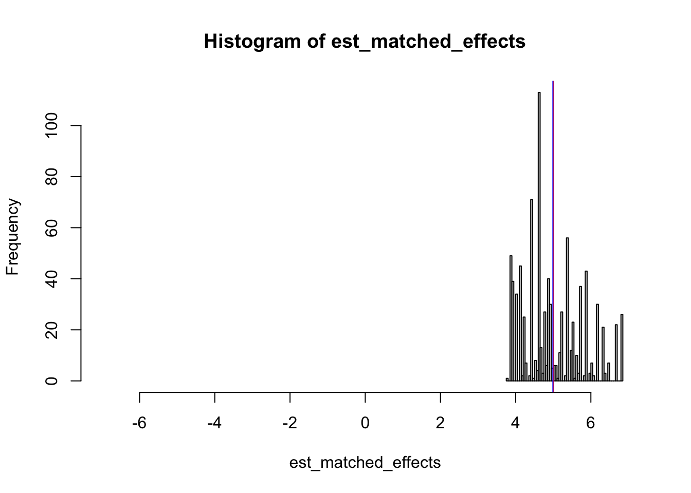
In the case that researchers are not able to control how clusters are formed, they can still investigate cluster-level heterogeneity in treatment effects as a way of understanding possible spillovers. However, in both cases, assumptions must be made about the nature of spillovers. Strictly speaking, these cannot be causally identified due to the unobservability of the outcomes \(Y_{01}\) and \(Y_{10}\). Ultimately, one would need to combine clustered and non-clustered randomization schemes in order to estimate the effects of intra-cluster spillover, \(Y_{11} - Y_{01}\) and \(Y_{01} - Y_{00}\). Therefore, in the interests of interpreting results correctly, researchers should be careful when defining their estimand to take account of the potential for intra-cluster spillover.
In our discussion of information loss, we assessed approaches that require (1) that treatment was randomized as planned and (2) that the treatment assigned to one unit did not change the potential outcomes for any other unit. In cases where these assumptions may be violated, it is sometimes simpler to specify statistical models that attempt to describe the features of complex designs. Even if we do not believe the models as scientific descriptions of a known process, this can be a more informative and flexible way of analyzing an experiment than to derive complex new expressions for design-based estimators.
In model-based approaches, the sampling distribution of an estimator is approximated using probability distributions to characterize our uncertainty about unknown quantities, such as the true treatment effect or the true mean of the outcome at the cluster level. Such approaches are referred to as ‘model-based’, because they depict causal relationships as arising from interrelated probability distributions. Often, such approaches use ‘multilevel models’, in which unknown parameters — such as differences between clusters — are themselves understood as arising from probability distributions. Thus, for example, there might be a model for individual-level outcomes, whose intercept and/or coefficients vary from one cluster to another. In this manner, it is possible to model the ‘effect of being a unit in cluster A’, separately from the estimation of the treatment effect. The advantage of such approaches is that they allow for ‘partial pooling’ of the variance in the population and the variance among clusters. When a given cluster is poorly estimated, it contributes less weight to the estimation, and vice versa. Such models therefore often work well in situations where there is very little data in some clusters: through the specification of a Bayesian posterior distribution, they are able to leverage information from all parts of the study. The trade-off is that such assumption-heavy models are only correct to the extent that the assumptions underlying them are correct.
Here we show that the estimated effect is the same whether we use a simple difference of means (via OLS) or a multilevel model in our very simplified cluster randomized trial setup.
library(lme4)
simple_OLS <- lm(Y ~ Z,data = J_30_clusters)
multilevel <- lmer(Y ~ Z + (1 | j),
data = J_30_clusters,
control = lmerControl(optimizer = "bobyqa"),
REML = TRUE
)
kable(round(data.frame(
OLS=coef(simple_OLS)["Z"],Multilevel=fixef(multilevel)["Z"]
),3))| OLS | Multilevel | |
|---|---|---|
| Z | -0.13 | -0.13 |
The confidence intervals differ even though the estimates are the same — and there is more than one way to calculate confidence intervals and hypothesis tests for multilevel models. The software in R (Bates et al. 2015) includes three methods by default and Gelman and Hill (2006) recommend MCMC sampling from the implied posterior. Here we focus on the Wald method only because it is the fastest to compute.
# This function calculates confidence intervals for linear models
# with custom variance-covariance matrices
confint_HC<-function (coefficients, df, level = 0.95, vcov_mat, ...) {
a <- (1 - level)/2
a <- c(a, 1 - a)
fac <- qt(a, df)
ses <- sqrt(diag(vcov_mat))
coefficients + ses %o% fac
}
simple_OLS_CI <-
confint_HC(
coefficients = coef(simple_OLS),
vcov_mat = RCSE(
model = simple_OLS,
cluster = J_30_clusters$j,
return_cov = TRUE
),
df = simple_OLS$df.residual
)["Z", ]
multi_wald_CI <- lme4::confint.merMod(
multilevel,
parm = "Z", method = "Wald"
)["Z", ]
multi_profile_CI <- lme4::confint.merMod(
multilevel,
parm = 4, method = "profile"
)["Z", ]
knitr::kable(round(rbind(
Design_Based_CI = simple_OLS_CI,
Model_Based_Wald_CI = multi_wald_CI,
Model_Based_Profile_CI = multi_profile_CI
),3))| 2.5 % | 97.5 % | |
|---|---|---|
| Design_Based_CI | -0.416 | 0.156 |
| Model_Based_Wald_CI | -0.421 | 0.161 |
| Model_Based_Profile_CI | -0.420 | 0.161 |
We can calculate an estimate of the ICC directly from the model quantities (the variance of the Normal prior that represents the cluster-to-cluster differences in the intercept over the total variance of the Normal posterior).
ICC
0.09 In order to assess the performance of this model-based approach, as opposed to the robust-clustered standard-error (RCSE) and cluster-aggregated approaches outlined above, we can check how often the different approaches falsely reject the sharp null hypothesis of no effects for any unit, when we know that this null is true.
To do so, we write a function that firstly breaks the relationship between the treatment assignment and the outcome by randomly shuffling the assignment, and then tests whether 0 is in the 95% confidence interval for each of the three approaches, as it should be. Recall that, valid tests would have error rates within 2 simulation standard errors of .95 - this would mean that a correct null hypothesis would be rejected no more than 5% of the time.
# Make a function for checking whether 0 is in the confidence interval of
# the RCSE, cluster-aggregated, and multilevel estimation approaches
sim_0_ate <- function(J,Y) {
# Make the true relationship between treatment and outcomes equal zero by
# shuffling Z but not revealing new potential outcomes
z.sim <- sample(1:max(J), max(J) / 2)
Z_new <- ifelse(J %in% z.sim == TRUE, 1, 0)
# Estimate using the linear model for RCSE
linear_fit <- lm(Y ~ Z_new)
linear_RCSE <- RCSE(
model = linear_fit,
cluster = J,
return_cov = TRUE
)
linear_CI <- confint_HC(
coefficients = coef(linear_fit),
vcov_mat = linear_RCSE,
df = linear_fit$df.residual
)["Z_new", ]
# Check if the confidence interval bounds 0
zero_in_CI_RCSE <- (0 >= linear_CI[1]) & (0 <= linear_CI[2])
# Estimate using cluster-aggregated approach (Hansen and Bowers 2008)
Yj <- tapply(Y, J, sum)
Zj <- tapply(Z_new, J, mean)
m0 <- unique(table(J))
n <- length(Zj)
nt <- sum(Zj)
# Do Hansen and Bowers 2008 based test for difference of means
# with cluster-level assignment (assuming same size clusters)
ones <- rep(1, length(Yj))
dp <- crossprod(Zj,Yj) * (n / (m0 * nt * (n - nt))) -
crossprod(ones,Yj) / (m0 * (n - nt))
obs_ATE <- dp[1,1]
# Two tailed p-value for the test of the null of no effects
Vdp <- (n / (m0 * nt * (n - nt))) * (var(Yj) / m0)
HB_pval <- 2 * (1 - pnorm(abs(obs_ATE) / sqrt(Vdp)))
# Check if the p-value is greater than .05
zero_not_rej_HB <- HB_pval >= .05
# Estimate using a multilevel model
multilevel_fit <- lmer(Y ~ Z_new + (1 | J),
control = lmerControl(optimizer = "bobyqa"),
REML = FALSE
)
multilevel_CI <- lme4:::confint.merMod(
multilevel_fit,
parm = "Z_new", method = "Wald"
)
# Check if the confidence interval bounds 0
zero_in_CI_multilevel <- (0 >= multilevel_CI[1]) & (0 <= multilevel_CI[2])
return(
c(
ATE = fixef(multilevel_fit)["Z_new"],
zero_in_CI_RCSE = zero_in_CI_RCSE,
zero_not_rej_HB = zero_not_rej_HB,
zero_in_CI_multilevel = zero_in_CI_multilevel
)
)
}
# Now simulate each of the estimates 1000 times
J_4_comparison <- replicate(1000, sim_0_ate(J = J_4_clusters$j, Y = J_4_clusters$Y))
J_4_error_rates <- apply(J_4_comparison,1,mean)
J_4_error_rates[-1] <- 1-J_4_error_rates[-1]
J_10_comparison <- replicate(1000, sim_0_ate(J = J_10_clusters$j, Y = J_10_clusters$Y))
J_10_error_rates <- apply(J_10_comparison,1,mean)
J_10_error_rates[-1] <- 1-J_10_error_rates[-1]
J_30_comparison <- replicate(1000, sim_0_ate(J = J_30_clusters$j, Y = J_30_clusters$Y))
J_30_error_rates <- apply(J_30_comparison,1,mean)
J_30_error_rates[-1] <- 1-J_30_error_rates[-1]
J_100_comparison <- replicate(1000, sim_0_ate(J = J_100_clusters$j, Y = J_100_clusters$Y))
J_100_error_rates <- apply(J_100_comparison,1,mean)
J_100_error_rates[-1] <- 1-J_100_error_rates[-1]
error_comparison <- data.frame(round(rbind(
J_4_error_rates,
J_10_error_rates,
J_30_error_rates,
J_100_error_rates
),3))
colnames(error_comparison) <- c(
"Estimated ATE",
"OLS + RCSE",
"Cluster-Level",
"Multi-Level"
)
kable(error_comparison,align = "c")| Estimated ATE | OLS + RCSE | Cluster-Level | Multi-Level | |
|---|---|---|---|---|
| J_4_error_rates | 0.002 | 0.000 | 0.000 | 0.334 |
| J_10_error_rates | 0.005 | 0.101 | 0.042 | 0.101 |
| J_30_error_rates | 0.003 | 0.061 | 0.040 | 0.063 |
| J_100_error_rates | -0.001 | 0.058 | 0.052 | 0.059 |
In our simple setup, the individual-level approaches behave about the same way: neither the design-based nor the model-based approach produces valid statistical inferences until the number of clusters is at least 30. This makes sense: both approaches rely on central limit theorems so that a Normal law can describe the distribution of the test statistic under the null hypothesis. The cluster-level approach is always valid, but sometimes produces overly large confidence intervals (when the number of clusters is small). When the number of clusters is large (say, 100), then all approaches are equivalent in terms of their error rates. Designs with few clusters should consider either the cluster-level approach using the normal approximation shown here or even direct permutation based approaches to statistical inference.
We want designs that are likely to reject hypotheses inconsistent with the data, and unlikely to reject hypotheses consistent with the data. We’ve seen that the assumptions required for the validity of common tests (typically, large numbers of observations, or large quantities of information in general) are challenged by clustered designs, and the tests which account for clustering can be invalid if the number of clusters is small (or information is low at the cluster level in general). We’ve also seen that we can produce valid statistical tests for hypotheses about the average treatment effect using either Robust Clustered Standard Errors (RCSE), multilevel models or using the cluster-level approach described by Hansen and Bowers (2008), and that pair-matching can drastically minimize bias in designs with unequal cluster sizes.
The most important rule regarding the statistical power of clustered designs is that more small clusters are better than fewer larger ones. This can be demonstrated through simulated experiments. Generally speaking, the most flexible way to evaluate the power of a design is through simulation, as it allows for complex clustering and blocking schemes, and can incorporate covariates. In the following we use the OLS estimator with Robust Clustered Standard Errors, in order to save on computation time, but the same analysis can be achieved using any estimator and test statistic.
# A function to test the null hypothesis and the true hypothesis
test_H0_and_Htrue <- function(J = J,n = n,treatment_effect = treatment_effect,ICC = ICC) {
# Make data:
data <- make_clustered_data(
J = J,
n = n,
treatment_effect = treatment_effect,
ICC = ICC
)
linear_fit <- lm(Y ~ Z,data = data)
RCSE_CI <- confint_HC(
coefficients = coef(linear_fit),
vcov_mat = RCSE(
model = linear_fit,
cluster = data$j,
return_cov = TRUE
),
df = linear_fit$df.residual
)["Z", ]
# Zero should not be in this CI very often as the null of 0 is false here
correct_reject <- !((0 >= RCSE_CI[1]) & (0 <= RCSE_CI[2]))
# Test null of true taus (first attempt is use true, second is to make 0 true)
# Reassign village level treatment so that Y is indep of Z --- so true effect is 0
data$Z_new <- ifelse(data$j %in% sample(1:J, max(J)/2), 1, 0)
linear_fit_true <-lm(Y ~ Z_new,data = data)
RCSE_CI_true <- confint_HC(
coefficients = coef(linear_fit_true),
vcov_mat = RCSE(
model = linear_fit_true,
cluster = data$j,
return_cov = TRUE
),
df = linear_fit$df.residual
)["Z_new", ]
# Zero should be in this CI very often as the null of 0 is true here
false_positive <- !((0 >= RCSE_CI_true[1]) & (0 <= RCSE_CI_true[2]))
return(c(
correct_reject = correct_reject,
false_positive = false_positive
))
}We can now analyze how power is affected when the number of clusters and the size of clusters vary, holding the ICC constant at .01 and the treatment effect constant at .2. We look both at the power — how often we correctly reject the null of no effect when there really is one - as well as at the error — how often we incorrectly reject the null of no effect when there really isn’t an effect. Typically we want the power to be around .8 and the error rate to be around .5 (when using a 95% confidence level).
# The numbers of clusters we will consider
Js <- c(8,20,40,80,160,320)
# The cluster sizes we will consider
n_js <- c(8,20,40,80,160,320)
# Create an empty matrix to store the results
# The first stores the power and the second stores the error
power_J_n <- error_J_n <- matrix(
data = NA,
nrow = length(Js),
ncol = length(n_js),
dimnames = list(
paste("J =",Js),
paste("n_j =",n_js)
)
)
# Set the number of simulations
sims <- 100
# Loop through the different cluster numbers
for( j in 1:length(Js)){
# Loop through the different cluster sizes
for(n in 1:length(n_js)){
# Estimate the power and error rate for each combination
test_sims <- replicate(
n = sims,
expr = test_H0_and_Htrue(
J = Js[j],
n = n_js[n],
treatment_effect = .25,
ICC = .01
)
)
power_error <- rowMeans(test_sims)
# Store them in the matrices
power_J_n[j,n] <- power_error[1]
error_J_n[j,n] <- power_error[2]
}
}
# Plot the power under the different scenarios
matplot(power_J_n, type = c("b"),pch=1,axes = F,ylim = c(0,1.5),ylab = "power")
axis(side = 1,labels = rownames(power_J_n),at = 1:6)
axis(side = 2,at = seq(0,1,.25))
abline(h=.8)
legend("top", legend = colnames(power_J_n),col = 1:6 ,pch=1,horiz = TRUE)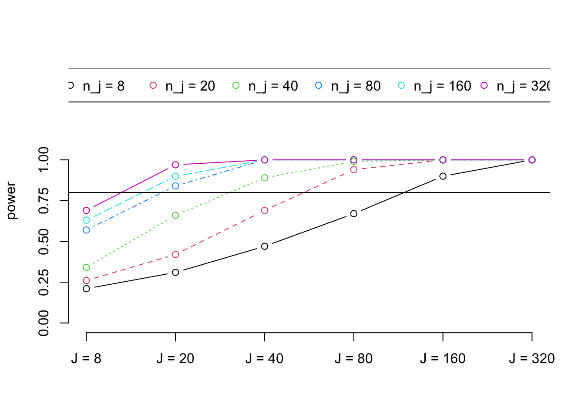
# Plot the error rate under the different scenarios
matplot(error_J_n, type = c("b"),pch=1,axes = F,ylim = c(0,.5),ylab = "error rate")
axis(side = 1,labels = rownames(error_J_n),at = 1:6)
axis(side = 2,at = seq(0,1,.25))
abline(h=.05)
legend("top", legend = colnames(error_J_n),col = 1:6 ,pch=1,horiz = TRUE)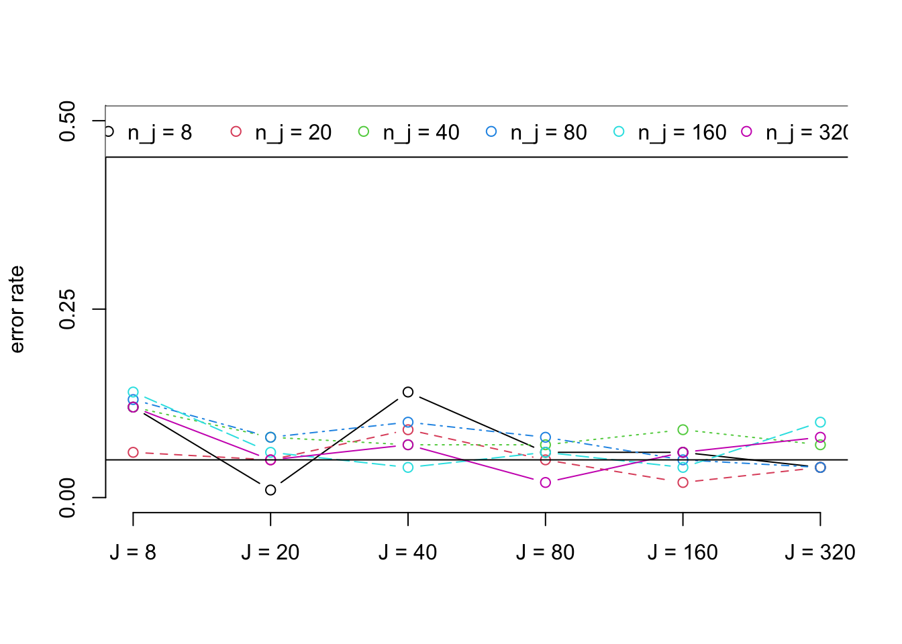
We see that power is always low when the number of clusters is low, regardless of how large the clusters are. Even with huge clusters (with 320 units each), the statistical power of the study is still relatively low when the number of clusters is 8. Similarly, it takes a large number of clusters to power a study with small clusters: although it is sufficient to have many clusters in order to power an experiment, irrespective of cluster size, power increases much more rapidly when the clusters are larger. Note also that while error rates appear systematically related to the number of clusters, the same is not true for cluster sizes.
Next, we can evaluate how the intra-cluster correlation affects power. We will hold the structure of the sample size constant at \(J=80,n_j=80\) and \(J=160,n_j=160\), and compare across a range of ICC values, from low (.01) to high (.6).
J_njs <- c(80,160)
ICCs <- seq(0,.6,.1)+c(.01,0,0,0,0,0,0)
power_ICC <- error_ICC <- matrix(
data = NA,
nrow = length(ICCs),
ncol = length(J_njs),
dimnames = list(
paste("ICC =",ICCs),
paste("J =",J_njs,"n_j = ",J_njs)
)
)
# Set the number of simulations
sims <- 100
# Loop through the different ICCs
for( i in 1:length(ICCs)){
# Loop through the different cluster sizes
for(j in 1:length(J_njs)){
# Estimate the power and error rate for each combination
test_sims <- replicate(
n = sims,
expr = test_H0_and_Htrue(
J = J_njs[j],
n = J_njs[j],
treatment_effect = .25,
ICC = ICCs[i]
)
)
power_error <- rowMeans(test_sims)
# Store them in the matrices
power_ICC[i,j] <- power_error[1]
error_ICC[i,j] <- power_error[2]
}
}
# Plot the power under the different scenarios
matplot(power_ICC, type = c("b"),pch=1,axes = F,ylim = c(0,1.5),ylab = "power (high ICC)")
axis(side = 1,labels = rownames(power_ICC),at = 1:7)
axis(side = 2,at = seq(0,1,.25))
abline(h=.8)
legend("top", legend = colnames(power_ICC),col = 1:2 ,pch=1,horiz = TRUE)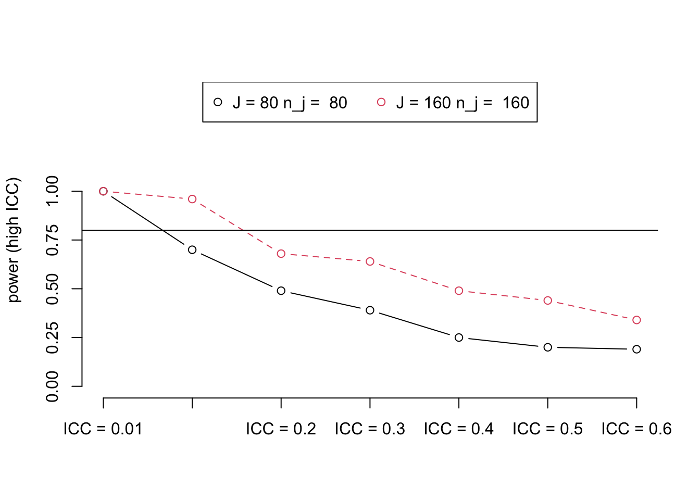
# Plot the error rate under the different scenarios
matplot(error_ICC, type = c("b"),pch=1,axes = F,ylim = c(0,.5),ylab = "error rate")
axis(side = 1,labels = rownames(error_ICC),at = 1:7)
axis(side = 2,at = seq(0,1,.25))
abline(h=.05)
legend("top", legend = colnames(error_ICC),col = 1:2 ,pch=1,horiz = TRUE)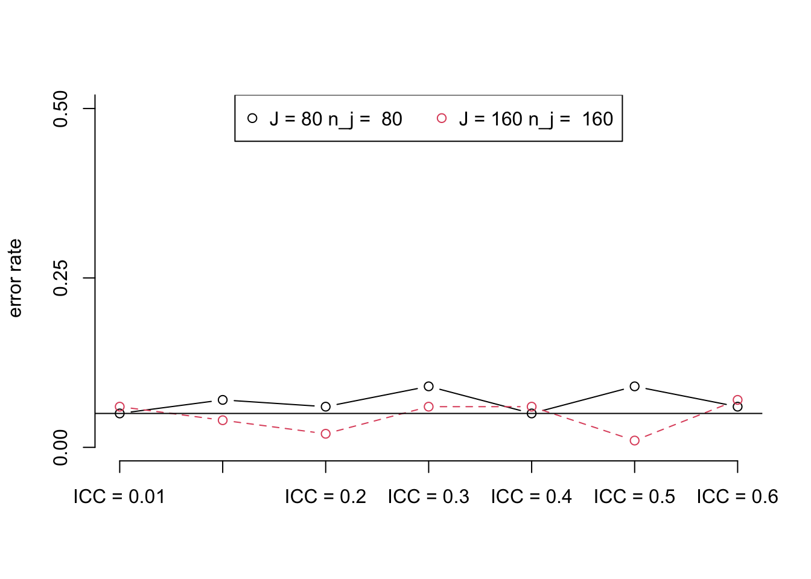
As this example illustrates, high ICC can severely diminish the statistical power of the study, even with many large clusters.
Randomization checks in clustered designs follow the same form as the preceding discussion. A valid test for a treatment effect is a valid test for placebo or covariate balance. The only difference from our preceding discussion is that one uses a background covariate or baseline outcome — some variable putatively uninfluenced by the treatment — in place of the outcome itself. So, randomization tests with small numbers of clusters may be too quick to declare an experiment ill-randomized if the analyst is not aware of the methods of error-rate analysis that we described above.
One new problem does arise in the context of randomization tests. Often one has many covariates which could be used to detect unlucky imbalances or field problems with the randomization itself. And, if one uses hypothesis tests, then, of course, a valid test which encourages us to declare “imbalance” when \(p<.05\) would do so falsely for one in every twenty variables tested. For this reason, we recommend using one-by-one testing as an exploratory tool and using omnibus tests (like the Hotelling T-test or an F-test or the Hansen and Bowers (2008) \(d^2\) test), which can combine information across many dependent tests into one test statistic to make balance tests directly. However, these tests must account for the clustered nature of the design: a simple F-test without accounting for the clustered-design will likely mislead an analyst into declaring a design unbalanced and perhaps charging the field staff with a randomization failure.
Since cluster randomized experiments tend to have cluster-level covariates (say, village size, etc..) balance checks at the cluster level make sense and do not require explicit changes to account for clustered-assignment. Hansen and Bowers (2008) develop such a test and provide software to implement it. So, for example, if we had 10 covariates measured at the village level, and we had a large number of villages we could assess an omnibus balance hypothesis using this design-based but large-sample tool.
Here we show only the omnibus test results. The one-by-one assessments that make up the omnibus test are also available in the balance_test object. Here, the omnibus test tell us that we have little information against the null that these observations arose from a randomized study.
Loading required package: SparseM
Attaching package: 'SparseM'The following object is masked from 'package:base':
backsolveLoading required package: dgof
Attaching package: 'dgof'The following object is masked from 'package:stats':
ks.testWarning: replacing previous import 'stats::ks.test' by 'dgof::ks.test' when
loading 'RItools'options(digits=3)
# Make a village level dataset
villages <- aggregate(pretend_data,by = list(village = pretend_data$j), mean)
# Generate 10 fake covariates
set.seed(12345)
villages[paste("x",1:10,sep="")] <- matrix(rnorm(nrow(villages)*10), ncol=10)
balance_formula <- reformulate(paste("x",1:10,sep=""), response="Z")
# Do a design-based, large sample balance test
balance_test <-xBalance(balance_formula,
strata=list(noblocks=NULL),
data=villages,
report = c(
"std.diffs", "z.scores", "adj.means",
"adj.mean.diffs", "chisquare.test", "p.values"
)
)
# The results of the 1-by-1 balance tests
kable(round(balance_test$results,2),align = "c")| Control.noblocks | Treatment.noblocks | adj.diff.noblocks | std.diff.noblocks | z.noblocks | p.noblocks | |
|---|---|---|---|---|---|---|
| x1 | -0.24 | -0.02 | 0.22 | 0.26 | 0.43 | 0.67 |
| x2 | 0.68 | -0.11 | -0.78 | -1.01 | -1.47 | 0.14 |
| x3 | 0.37 | -0.20 | -0.57 | -0.47 | -0.77 | 0.44 |
| x4 | 1.15 | 0.30 | -0.86 | -0.71 | -1.11 | 0.27 |
| x5 | -0.16 | 0.04 | 0.20 | 0.14 | 0.24 | 0.81 |
| x6 | 1.08 | -0.54 | -1.62 | -1.55 | -1.97 | 0.05 |
| x7 | -0.04 | 0.08 | 0.12 | 0.09 | 0.15 | 0.88 |
| x8 | 0.76 | 0.12 | -0.63 | -0.58 | -0.92 | 0.36 |
| x9 | 1.32 | 0.37 | -0.95 | -1.30 | -1.76 | 0.08 |
| x10 | -0.33 | 0.28 | 0.61 | 0.51 | 0.82 | 0.41 |
| chisquare | df | p.value | |
|---|---|---|---|
| noblocks | 9 | 9 | 0.44 |
In this case, we cannot reject the omnibus hypotheses of balance even though, as we expected, we have a few covariates with falsely low \(p\)-values. One way to interpret this omnibus result is to say that such imbalances on a few covariates would not appreciably change any statistical inferences we make about treatment effects as long as these covariates did not strongly predict outcomes in the control group. Alternatively, we could say that any large experiment can tolerant chance imbalance on a few covariates (no more than roughly 5% if we are using \(\alpha=.05\) as our threshold to reject hypotheses).
This guide was originally written by Jake Bowers and Ashlea Rundlett (22 Nov 2014). Updates made by Jasper Cooper (25 Aug 2015) and Anna Wilke (Mar 2022).↩︎